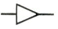
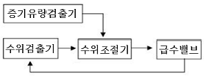
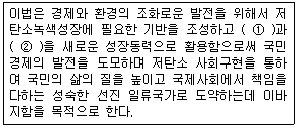

에너지관리기능사 (2011-07-31 기출문제)
1과목: 임의 구분
1. 프로판 가스의 연소식은 C3H₈＋5O2 → 3CO2＋4H2O이다. 프로판 가스 10kg을 완전 연소시키는데 필요한 이론 산소량은?
- 약 11.6N㎥
- 약 25.5N㎥
- 약 13.8N㎥
- 약 22.4N㎥
(정답률: 63%)

2. 다음 제어동작 중 연속제어 특성과 관계가 없는 것은?
- P동작(비례동작)
- I동작(적분동작)
- D동작(미분동작)
- ON-OFF동작(2위치 동작)
(정답률: 89%)
3. 외기온도 20℃, 배기가스온도 200℃이고, 연돌높이가 20m일 때 통풍력은 약 얼마인가?
- 5.5mmAq
- 7.2mmAq
- 9.2mmAq
- 12.2mmAq
(정답률: 52%)
4. 부탄가스(C4H1₀) 1N㎥을 완전연소 시킬 경우 H2O는 몇 N㎥가 생성되는가?
- 4.0
- 5.0
- 6.5
- 7.5
(정답률: 54%)
5. 아래 그림기호의 관조인트 종류의 명칭으로 맞는 것은?

- 엘보
- 리듀서
- 티
- 디스트리뷰터
(정답률: 86%)
6. 다음 중 기름여과기(oil strainer)에 대한 설명으로 틀린 것은?
- 여과기 전후에는 압력계를 설치한다.
- 여과기는 사용압력의 1.5배 이상의 압력에 견딜 수 있는 것이어야 한다.
- 여과기 입출구의 압력차가 0.⑤kgf/cm2 이상일 때는 여과기를 청소해주어야 한다.
- 여과기는 단식과 복식이 있으며 단식은 유량계, 밸브 등의 입구 측에 설치한다.
(정답률: 53%)
7. 보일러 점화 시 역화현상이 발생하는 원인이 아닌 것은?
- 기름 탱크에 기름이 부족할 때
- 연료밸브를 과다하게 급히 열었을 때
- 점화 시에 착화가 늦어졌을 때
- 댐퍼가 너무 닫힌 때나 흡입통풍이 부족할 때
(정답률: 70%)
8. 보일러의 열정산의 조건과 측정방법을 설명한 것 중 틀린 것은?
- 열정산시 기준온도는 시험시의 외기온도를 기준으로 하나, 필요에 따라 주위온도로 할 수 있다.
- 급수량 측정은 중량 탱크식 또는 용량 탱크식 혹은 용적식유량계, 오리피스 등으로 한다.
- 공기온도는 공기예열기 입구 및 출구에서 측정한다.
- 발생증기의 일부를 연료가열, 노내취입 또는 공기에열기를 사용하는 경우에는 그 양을 측정하여 급수량에 더한다.
(정답률: 47%)
9. 소형관류보일러(다관식 관류보일러)를 구성하는 주요구성 요소로 맞는 것은?
- 노통과 연관
- 노통과 수관
- 수관과 드럼
- 수관과 헤더
(정답률: 58%)
10. 보일러의 급수장치에서 인젝터의 특징 설명으로 틀린 것은?
- 구조가 간단하고 소형이다.
- 급수량의 조절이 가능하고 급수효율이 높다.
- 증기와 물이 혼합하여 급수가 예열된다.
- 인젝터가 과열되면 급수가 곤란하다.
(정답률: 62%)
11. 보일러에 설치되는 스테이의 종류가 아닌 것은?
- 바 스테이
- 경사 스테이
- 관 스테이
- 본체 스테이
(정답률: 66%)
12. 다음 중 증기보일러의 상당증발량의 단위는?
- kg/h
- kcal/h
- kcal/kg
- kg/s
(정답률: 43%)
13. 가스유량과 일정한 관계가 있는 다른 양을 측정함으로서 간접적으로 가스유량을 구하는 방식인 추량식 가스미터의 종류가 아닌 것은?
- 델타(delta)형
- 터빈(turbine)형
- 벤튜리(venturi)형
- 루트(roots)형
(정답률: 46%)
14. 사용 시 예열이 필요 없고 비중이 가장 작은 중유는?
- 타르 중유
- A급 중유
- B급 중유
- C급 중유
(정답률: 78%)
15. 오일예열기의 역할과 특징 설명으로 잘못된 것은?
- 연료를 예열하여 과잉공기율을 높인다.
- 기름의 점도를 낮추어 준다.
- 전기나 증기 등의 열매체를 이용한다.
- 분무상태를 양호하게 한다.
(정답률: 67%)
16. 다음 중 슈트 블로워 사용 시 주의사항으로 틀린 것은?
- 부하가 50%이하이거나 소화 후에 사용하여야 한다.
- 분출기내의 응축수를 배출시킨 후 사용한다.
- 분출하기 전 연도 내 배풍기를 사용하여 유인통풍을 증가하여야 한다.
- 한 곳에 집중적으로 사용함으로 전열면에 무리를 가하지 말아야 한다.
(정답률: 73%)
17. 가정용 온수보일러의 용량표시로 가장 많이 사용되는 것은?
- 상당증발량
- 시간당 발열량
- 전열면적
- 최고사용압력
(정답률: 56%)
18. 보일러 점화나 소화가 정해진 순서에 따라 진행되는 제어는?
- 피드백 제어
- 인터록 제어
- 시퀀스 제어
- ABC제어
(정답률: 87%)
19. 공기-연료제어장치에서 공기량 조절방법으로 올바르지 않은 것은?
- 보일러 온수온도에 따라 연료조절밸브와 공기댐퍼를 동시에 작동시킨다.
- 연료와 공기량은 서로 반비례 관계로 조절한다.
- 최고부하에서는 일반적으로 공기비가 가장 낮게 조절한다.
- 공기량과 연료량을 버너 특성에 따라 공기선도를 참조하여 조절한다.
(정답률: 54%)
20. 다음 중 가압수식 집진장치의 종류에 속하는 것은?
- 백필터
- 세정탑
- 코트렐
- 배플식
(정답률: 75%)
2과목: 임의 구분
21. 보일러설치검사기준에서 관류보일러에서 보일러와 압력방출장치와의 사이에 체크밸브를 설치할 경우 압력방출장치는 ( )개 이상 이어야 한다. ( )에 들어갈 숫자로 맞는 것은?
- 1
- 2
- 3
- 4
(정답률: 78%)
22. 다음 중 화염의 유무를 검출하는 것은?
- 윈드박스(wind box)
- 보염기(stabilizer)
- 버너타일(burner tile)
- 플레임아이(flame eye)
(정답률: 76%)
23. 기체연료 연소장치의 특징 설명으로 틀린 것은?
- 연소조절이 용이하다.
- 연소의 조절범위가 넓다.
- 속도가 느려 자동제어 연소에 부적합하다.
- 회분 성분이 없고 대기오염의 발생이 적다.
(정답률: 81%)
24. 다음 중 캐리오버에 대한 설명으로 틀린 것은?
- 보일러에서 불순물과 수분이 증기와 함께 송기되는 현상이다.
- 기계적 캐리오버와 선택적 캐리오버로 분류한다.
- 프라이밍이나 포밍은 캐리오버와 관계가 없다.
- 캐리오버가 일어나면 여러 가지 장해가 발생한다.
(정답률: 86%)
25. 1kg의 습증기 속에 건증기가 0.4kg이라 하면 건도는 얼마인가?
- 0.2
- 0.4
- 0.6
- 0.8
(정답률: 63%)
26. 저위발열량 10,000kcal/kg인 연료를 매시 360kg연소시키는 보일러에서 엔탈피 661.4kcal/kg인 증기를 매시간당 4,500kg발생시킨다. 급수온도 20℃인 경우 보일러 효율은 약 얼마인가?
- 56%
- 68%
- 75%
- 80%
(정답률: 49%)
27. 다음 아래 그림은 몇 요소 수위제어를 나타낸 것인가?

- 1요소 수위제어
- 2요소 수위제어
- 3요소 수위제어
- 4요소 수위제어
(정답률: 64%)
28. 드럼 없이 초임계 압력 이상에서 고압증기를 발생시키는 보일러는?
- 복사 보일러
- 관류 보일러
- 수관 보일러
- 노통연관 보일러
(정답률: 75%)
29. 과열기가 설치된 경우 과열증기의 온도 조절방법으로 틀린 것은?
- 열가스량을 댐퍼로 조절하는 방법
- 화염의 위치를 변환시키는 방법
- 고온의 가스를 연소실내로 재순환시키는 방법
- 과열점감기를 사용하는 방법
(정답률: 46%)
30. 건물의 각 실내에 방열기를 설치하여 증기 또는 온수로 난방하는 방식은?
- 복사난방법
- 간접난방법
- 개별난방법
- 직접난방법
(정답률: 62%)
31. 보일러 개조검사의 준비에 대한 설명으로 맞는 것은?
- 화염을 받는 곳에는 그을음을 제거하여야 하며, 얇아지기 쉬운 관 끝부분을 해머로 두들겨 보았을 때 두께의 차이가 다소 나야 한다.
- 관의 부식 등을 검사할 수 있도록 스케일은 제거되어야 하며, 관 끝부분의 손모, 취화 및 빠짐이 있어야 한다.
- 연료를 가스로 변경하는 검사의 경우 가스용 보일러의 누설시험 및 운전성능을 검사할 수 있도록 준비하여야 한다.
- 정전, 단수, 화재, 천재지변 등 부득이한 사정으로 검사를 실시할 수 없는 경우에는 재신청을 하여야만 검사를 받을 수 있다.
(정답률: 63%)
32. 온수난방의 특징 설명으로 틀린 것은?
- 실내의 쾌감도가 좋다.
- 온도조절이 용이하다.
- 예열시간이 짧다.
- 화상의 우려가 적다.
(정답률: 82%)
33. 안전밸브 및 압력방출장치의 크기를 호칭지름 20A이상으로 할 수 있는 보일러에 해당되지 않는 것은?
- 최대증발량 4t/h인 관류보일러
- 소용량 주철제보일러
- 소용량 강철제보일러
- 최고사용압력이 1MPa(10kgf/cm2)인 강철제보일러
(정답률: 55%)
34. 이온교환처리장치의 운전공정 중 재생탑에 원수를 통과시켜, 수중의 일부 또는 전부의 이온을 제거시키는 공정은?
- 압출
- 수세
- 부하
- 통약
(정답률: 56%)
35. 온수난방설비에서 개방형 팽창탱크의 수면은 최고층의 방열기와 몇 m 이상이어야 하는가?
- 1m
- 2m
- 3m
- 5m
(정답률: 58%)
36. 보일러에서 송기 및 증기사용 중 유의사항으로 틀린 것은?
- 항상 수면계, 압력계, 연소실의 연소상태 등을 잘 감시하면서 운반하도록 할 것
- 점화 후 증기발생시 까지는 가능한 한 서서히 가열시킬 것
- 2조의 수면계를 주시하여 항상 정상수면을 유지하도록 할 것
- 점화 후 주증기관 내의 응축수를 배출시킬 것
(정답률: 70%)
37. 다음 중 유기질 보온재에 해당하는 것은?
- 석면
- 규조토
- 암면
- 코르크
(정답률: 72%)
38. 연소효율을 구하는 식으로 맞는 것은?
- (공급열/실제연소열)×100
- (실제연소열/공급열)×100
- (유효열/실제연소열)×100
- (실제연소열/유효열)×100
(정답률: 66%)
39. 보일러 내부부식인 점식의 방지대책과 가장 관계가 적은 것은?
- 보일러수를 산성으로 유지한다.
- 보일러수 중의 용존산소를 배제한다.
- 보일러 내면에 보호피막을 입힌다.
- 보일러수 중에 아연판을 설치한다.
(정답률: 71%)
40. 보일러의 연소 관리에 관한 설명으로 잘못된 것은?
- 연료의 점도는 가능한 높은 것을 사용한다.
- 점화 후에는 화염감시를 잘한다.
- 저수위 현상이 있다고 판단되면 즉시 연소를 중단한다.
- 연소량의 급격한 증대와 감소를 하지 않는다.
(정답률: 87%)
3과목: 임의 구분
41. 안전보건표지의 색체, 색도기준 및 용도에서 화학물질 취급 장소에서의 유해위험경고를 나타내는 색체는?
- 흰색
- 빨간색
- 녹색
- 청색
(정답률: 90%)
42. 가스보일러 점화시의 주의사항으로 틀린 것은?
- 점화는 순차적으로 작은 불씨로부터 큰 불씨로 2~3회로 나누어 서서히 한다.
- 노내 환기에 주의하고, 실화 시에도 충분한 환기가 이루어진 뒤 점화한다.
- 연료 배관계통의 누설유무를 정기적으로 점검한다.
- 가스압력이 적정하고 안정되어 있는지 점검한다.
(정답률: 82%)
43. 개방식 팽창탱크에 연결되어 있는 것이 아닌 것은?
- 배기관
- 안전관
- 급수관
- 압력계
(정답률: 61%)
44. 지역난방의 특징 설명으로 틀린 것은?
- 각 건물에 보일러를 설치하는 경우에 비해 건물의 유효면적이 증대된다.
- 각 건물에 보일러를 설치하는 경우에 비해 열효율이 좋아진다.
- 설비의 고도화에 따라 도시 매연이 감소된다.
- 열매체는 증기보다 온수를 사용하는 것이 관내 저항손실이 적으므로 주로 온수를 사용한다.
(정답률: 56%)
45. 보일러의 점검에서 정기점검의 시기에 대한 설명으로 틀린 것은?
- 계속사용안전검사 등을 한 후
- 중간 청소를 한 때
- 연소실, 연도 등의 내화벽돌 등을 수리한 경우
- 누수 그 외의 손상이 생겨서 보일러를 휴지한 때
(정답률: 55%)
46. 유류연소 수동보일러의 운전 정지 시 관리 일반사항으로 틀린 것은?
- 운전정지 직전에 유류예열기의 전원(열원)을 차단하고, 유류예열기의 온도를 낮춘다.
- 보일러 수위를 정상수위보다 조금 높이고, 버너의 운전을 정지한다.
- 연소실내에서 분리하여 청소를 하고, 기름이 누설되는지 점검한다.
- 연소실내, 연도를 환기시키고, 댐퍼를 열어 둔다.
(정답률: 56%)
47. 증기난방의 분류에서 응축수 환수방식에 해당하는 것은?
- 고압식
- 상향 공급식
- 기계 환수식
- 단관식
(정답률: 71%)
48. 강철제 보일러의 수압시험에 관한 사항에서 보일러의 최고사용압력이 0.43MPa초과 1.5MPa 이하일 때에는 그 최고사용압력의 ( (ㄱ) )배에 ( (ㄴ) )MPa를 더한 압력으로 한다. ( )안에 알맞은 것은?
- (ㄱ) 1.3 (ㄴ) 0.3
- (ㄱ) 1.5 (ㄴ) 3.0
- (ㄱ) 2.0 (ㄴ) 0.3
- (ㄱ) 2.0 (ㄴ) 1.0
(정답률: 71%)
49. 보일러 점화전 수위확인 및 조정에 대한 설명 중 틀린 것은?
- 수면계의 기능테스트가 가능한 정도의 증기압력이 보일러 내에 남아 있을 때는 수면계의 기능시험을 해서 정상인지 확인한다.
- 2개의 수면계의 수위를 비교하고 동일수위인지 확인한다.
- 수면계에 수주관이 설치되어 있을 때는 수주연락관의 체크밸브가 바르게 닫혀 있는지 확인한다.
- 유리관이 더러워졌을 때는 수위를 오인하는 경우가 있기 때문에 필히 청소하거나 또는 교환하여야 한다.
(정답률: 57%)
50. 보일러 스케일 및 슬러지의 장해에 대한 설명으로 틀린 것은?
- 보일러를 연결하는 콕, 밸브, 기타의 작은 구멍을 막히게 한다.
- 스케일 성분의 성질에 따라서는 보일러 강판을 부식시킨다.
- 연관의 내면에 부착하여 물의 순환을 방해한다.
- 보일러 강판이나 수관 등의 과열의 원인이 된다.
(정답률: 38%)
51. 난방부하가 9,000kcal/h인 장소에 온수방열기를 설치하는 경우 필요한 방열기 쪽수는? (단, 방열기 1쪽당 표면적은 0.2m2이고, 방열량은 표준방열량으로 계산한다.)
- 70
- 100
- 110
- 120
(정답률: 66%)
52. 증기압력 상승 후의 증기송출 방법에 대한 설명으로 틀린 것은?
- 주증기 밸브는 특별한 경우를 제외하고는 완전히 열었다가 다시 조금 되돌려 놓는다.
- 증기를 보내기 전에 증기를 보내는 측의 주증기관의 드레인 밸브를 다 열고 응축수를 완전히 배출한다.
- 주증기 스톱밸브 전후를 연결하는 바이패스 밸브가 설치되어 있는 경우에는 먼저 바이패스 밸브를 닫아 주증기관을 따뜻하게 한다.
- 관이 따뜻해지면 주증기 밸브를 단계적으로 천천히 열어간다.
(정답률: 49%)
53. 증기난방설비에서 배관 구배를 주는 이유는?
- 증기의 흐름을 빠르게 하기 위해서
- 응축수의 체류를 방지하기 위해서
- 배관시공을 편리하게 하게 하기 위해서
- 증기와 응축수의 흐름마찰을 줄이기 위해서
(정답률: 76%)
54. 보일러의 안전관리상 가장 중요한 것은?
- 안전밸브 작동요령 숙지
- 안전저수위 이하 감수방지
- 버너 조절요령 숙지
- 화염검출기 및 댐퍼 작동상태 확인
(정답률: 70%)
55. 다음 중 대통령령으로 정하는 에너지공급자가 수립시행해야 하는 계획으로 맞는 것은?
- 지역에너지계획
- 에너지이용합리화 실시계획
- 에너지기술개발계획
- 연차별수요관리투자계획
(정답률: 32%)
56. 다음 보기는 저탄소 녹색성장 기본법의 목적에 관한 내용이다. ( )에 들어갈 내용으로 맞는 것은?

- ① 녹색기술 ② 녹색산업
- ① 녹색성장 ② 녹색산업
- ① 녹색물질 ② 녹색기술
- ① 녹색기업 ② 녹색성장
(정답률: 57%)
57. 검사에 합격하지 아니한 검사대상기기를 사용한 자에 대한 벌칙기준은?
- 300만 원 이하의 벌금
- 500만 원 이하의 벌금
- 1년 이하의 징역 또는 1천만 원 이하의 벌금
- 2년 이하의 징역 또는 2천만 원 이하의 벌금
(정답률: 84%)
58. 저탄소녹색성장기본법상 온실가스에 해당하지 않는 것은?
- 이산화탄소
- 메탄
- 수소
- 육불화황
(정답률: 76%)
59. 온실가스배출 감축실적의 등록 및 관리는 누가 하는가?
- 지식경제부장관
- 고용노동부장관
- 에너지관리공단이사장
- 환경부장관
(정답률: 50%)
60. 특정열사용기자재 및 설치시공범위에서 기관에 속하지 않는 것은?
- 축열식 전기보일러
- 온수보일러
- 태양열집열기
- 철금속가열로
(정답률: 53%)
이론 산소량은 1몰의 기체가 차지하는 부피가 22.4L이므로, 50몰의 산소가 차지하는 부피는 50 × 22.4L = 1120L이다.
하지만 이론 산소량은 일반적인 조건에서의 것이므로, 연소 시 발생하는 열로 인해 기체의 부피가 변화하게 된다. 따라서, 연소 시 발생하는 열의 영향을 고려하여 보정해야 한다.
이 보정 계산을 통해, 약 25.5N㎥의 이론 산소량이 필요하다는 것을 알 수 있다.